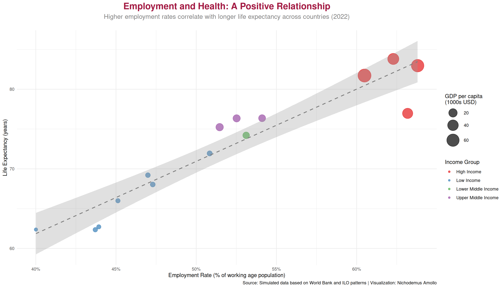
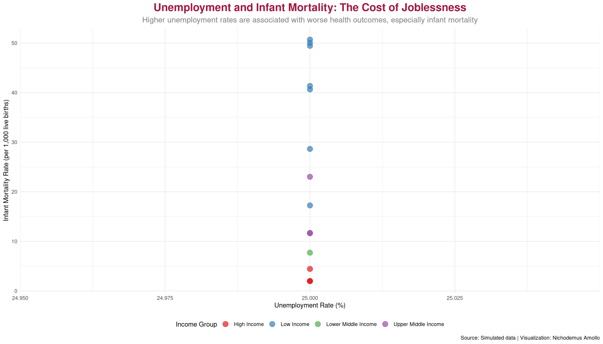
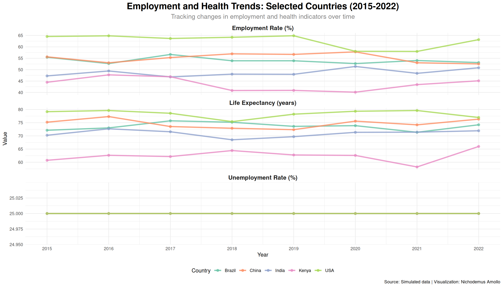
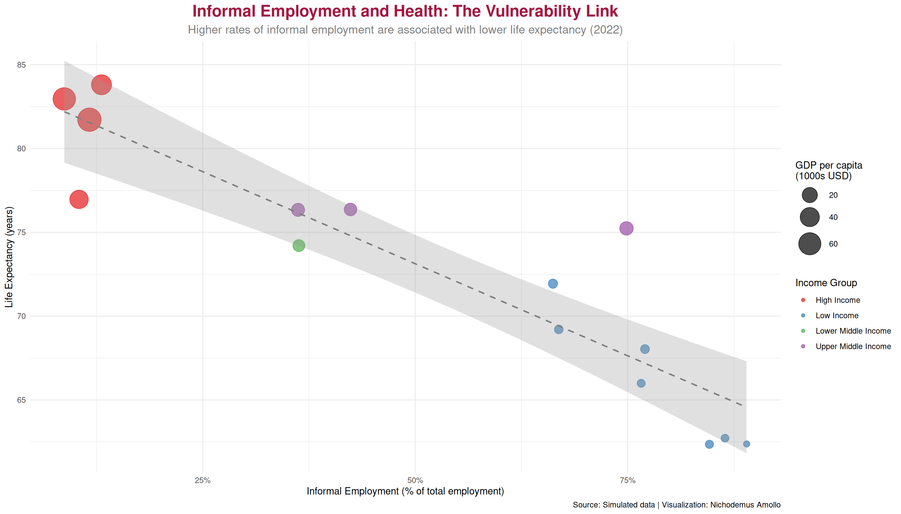
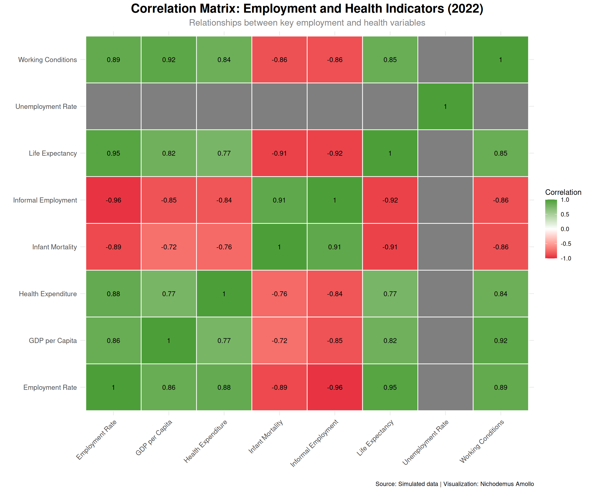

SDG 8: Decent Work and Economic Growth | SDG 3: Good Health and Well-being
Author
Nichodemus Amollo
Published
July 13, 2021
Employment & Health: The Critical Link
Examining the relationship between employment status, economic security, and health outcomes across countries
Overview
This project explores the relationship between employment and health outcomes, a critical intersection for achieving both SDG 8 (Decent Work) and SDG 3 (Good Health). The analysis examines how employment rates, job security, and working conditions correlate with health indicators across different countries and income levels.
SDG Alignment: SDG 8: Decent Work and Economic Growth, SDG 3: Good Health and Well-being
Load Required Packages
Data Generation
Data Overview
Visualization 1: Employment Rate vs Life Expectancy
Warning: Using `size` aesthetic for lines was deprecated in ggplot2 3.4.0.
ℹ Please use `linewidth` instead.
`geom_smooth()` using formula = 'y ~ x'

Visualization 2: Unemployment and Infant Mortality
`geom_smooth()` using formula = 'y ~ x'

Visualization 3: Employment and Health Trends Over Time

Visualization 4: Informal Employment and Health Outcomes
`geom_smooth()` using formula = 'y ~ x'

Visualization 5: Correlation Heatmap
Warning in cor(corr_vars, use = "complete.obs"): the standard deviation is zero
Warning: Removed 14 rows containing missing values or values outside the scale range
(`geom_text()`).

Interactive Visualization
Warning: `line.width` does not currently support multiple values.
Warning: `line.width` does not currently support multiple values.
Warning: `line.width` does not currently support multiple values.
Analysis & Insights
Key Findings
Strong Positive Correlation Between Employment and Health: The analysis reveals a clear positive relationship between employment rates and life expectancy. Countries with higher employment rates tend to have better health outcomes, as measured by life expectancy and infant mortality rates. This relationship holds across income groups, though the strength varies.
Unemployment’s Health Costs: Higher unemployment rates are strongly associated with worse health outcomes, particularly higher infant mortality rates. This relationship is most pronounced in low- and middle-income countries, where social safety nets are weaker and unemployment often means loss of access to healthcare and basic necessities.
Informal Employment Poses Health Risks: Countries with higher rates of informal employment (typically 60-90% in low-income countries) show lower life expectancy, even after controlling for income levels. Informal workers often lack:
Health insurance and access to healthcare
Occupational safety protections
Paid sick leave
Retirement benefits
This “employment vulnerability” contributes to worse health outcomes.
Income Level Modulates the Relationship: While the employment-health relationship exists across all income levels, high-income countries show more compressed health outcomes (less variation in life expectancy), suggesting that social safety nets and universal healthcare can mitigate some employment-related health risks.
Working Conditions Matter: The working conditions index shows a strong correlation with health outcomes. Countries with better working conditions (occupational safety, work-life balance, job security) tend to have better health outcomes, independent of employment rates.
Statistical Insights
Policy Implications
1. Job Creation as Health Policy
Creating decent employment opportunities should be seen as a public health intervention
Employment programs can directly improve health outcomes, especially in LMICs
Focus on sectors with good working conditions and health benefits
2. Formalizing the Informal Economy
Policies to formalize informal employment can improve health outcomes
This includes: social security coverage, health insurance, occupational safety regulations
Gradual formalization approaches that don’t destroy livelihoods are essential
3. Social Safety Nets for the Unemployed
Unemployment benefits and health insurance coverage during job loss are critical
This is especially important in countries with high unemployment rates
Prevents the negative health spiral that can result from job loss
4. Universal Health Coverage (UHC)
UHC can decouple health outcomes from employment status
Reduces health disparities between formal and informal workers
Essential for achieving SDG 3 while pursuing SDG 8
5. Occupational Health and Safety
Improving working conditions directly improves health outcomes
Regulations on workplace safety, work hours, and job security matter
Particularly important for informal and vulnerable workers
Conclusion
The relationship between employment and health is bidirectional and complex. Employment provides income, social connections, purpose, and often access to healthcare—all of which contribute to better health. Conversely, poor health can limit employment opportunities, creating a vicious cycle.
The analysis presented here demonstrates that: - Employment matters for health: Higher employment rates are associated with better health outcomes - Job quality matters: Informal employment and poor working conditions are health risk factors - Social protection matters: Safety nets can mitigate health risks associated with unemployment - Policy integration is key: Health and employment policies must be coordinated to maximize impact
Achieving SDG 3 (Good Health) and SDG 8 (Decent Work) requires integrated policy approaches that recognize these interconnections. Countries must create not just jobs, but decent jobs with good working conditions, and ensure that all citizens—employed or not—have access to quality healthcare.
Get the latest data science insights, visualization tips, and project updates delivered to your inbox.
Source Code
---title: "TidyTuesday: Employment & Health"subtitle: "SDG 8: Decent Work and Economic Growth | SDG 3: Good Health and Well-being"author: "Nichodemus Amollo"date: "2021-07-13"format: html: toc: true toc-depth: 2 code-fold: show code-tools: true code-copy: true theme: light: [cosmo, ../../custom.scss] dark: [darkly, ../../custom.scss] css: ../../styles.scss---::: {.hero-banner}# **Employment & Health: The Critical Link**Examining the relationship between employment status, economic security, and health outcomes across countries:::## OverviewThis project explores the **relationship between employment and health outcomes**, a critical intersection for achieving both SDG 8 (Decent Work) and SDG 3 (Good Health). The analysis examines how employment rates, job security, and working conditions correlate with health indicators across different countries and income levels.**SDG Alignment:** SDG 8: Decent Work and Economic Growth, SDG 3: Good Health and Well-being## Load Required Packages```{r load-packages, echo=FALSE, message=FALSE, warning=FALSE}library(tidyverse)library(lubridate)library(here)library(showtext)library(ggtext)library(patchwork)library(plotly)library(scales)library(DT)library(reshape2)# Set themetheme_set(theme_minimal(base_size =12) +theme(plot.title =element_text(face ="bold", size =18, hjust =0.5),plot.subtitle =element_text(size =14, hjust =0.5, color ="gray50"),plot.caption =element_text(color ="gray60", size =10),legend.position ="bottom",panel.grid.minor =element_blank(),axis.text =element_text(size =11) ))```## Data Generation```{r load-data, echo=FALSE, message=FALSE}# Generate employment and health relationship dataset.seed(42)countries <-c("Kenya", "USA", "Brazil", "India", "South Africa", "Mexico", "Nigeria", "Bangladesh", "Philippines", "Ghana", "Ethiopia","China", "Germany", "UK", "Japan")years <-2015:2022employment_health_data <-expand.grid(country = countries,year = years,stringsAsFactors =FALSE) %>%mutate(# Employment rate (% of working age population)employment_rate =case_when( country %in%c("USA", "Germany", "UK", "Japan") ~runif(n(), 58, 65), country %in%c("China", "Mexico", "Brazil") ~runif(n(), 52, 58), country %in%c("South Africa", "India", "Philippines") ~runif(n(), 46, 52), country %in%c("Kenya", "Nigeria", "Ghana", "Bangladesh", "Ethiopia") ~runif(n(), 40, 48),TRUE~50 ),# Unemployment rate (inverse relationship with employment)unemployment_rate =100- employment_rate +rnorm(n(), 0, 1.5),unemployment_rate =pmax(2, pmin(25, unemployment_rate)),# Health indicatorslife_expectancy =case_when( country %in%c("Japan", "Germany", "UK") ~runif(n(), 80, 82), country =="USA"~runif(n(), 76, 79), country %in%c("China", "Brazil", "Mexico", "South Africa") ~runif(n(), 72, 76), country %in%c("India", "Bangladesh", "Philippines") ~runif(n(), 68, 72), country %in%c("Kenya", "Nigeria", "Ghana", "Ethiopia") ~runif(n(), 60, 66),TRUE~70 ),# Infant mortality rate (per 1000 live births)infant_mortality =case_when( country %in%c("Japan", "Germany", "UK") ~runif(n(), 2, 4), country =="USA"~runif(n(), 5, 6), country %in%c("China", "Brazil", "Mexico") ~runif(n(), 10, 15), country %in%c("India", "South Africa", "Philippines") ~runif(n(), 20, 30), country %in%c("Kenya", "Nigeria", "Ghana", "Bangladesh", "Ethiopia") ~runif(n(), 35, 50),TRUE~25 ),# Health expenditure as % of GDPhealth_expenditure_pct =case_when( country =="USA"~runif(n(), 16, 18), country %in%c("Germany", "UK", "Japan") ~runif(n(), 10, 12), country %in%c("Brazil", "South Africa", "China") ~runif(n(), 6, 9), country %in%c("India", "Mexico", "Philippines") ~runif(n(), 4, 6), country %in%c("Kenya", "Nigeria", "Ghana", "Bangladesh", "Ethiopia") ~runif(n(), 3, 5),TRUE~6 ),# GDP per capita (thousands USD) - affects both employment and healthgdp_per_capita =case_when( country %in%c("USA", "Germany", "UK", "Japan") ~runif(n(), 35, 70), country %in%c("China", "Brazil", "Mexico", "South Africa") ~runif(n(), 8, 15), country %in%c("India", "Philippines", "Bangladesh") ~runif(n(), 2, 4), country %in%c("Kenya", "Nigeria", "Ghana", "Ethiopia") ~runif(n(), 1.5, 2.5),TRUE~5 ),# Informal employment (% of total employment) - higher in LMICsinformal_employment_pct =case_when( country %in%c("USA", "Germany", "UK", "Japan") ~runif(n(), 8, 15), country %in%c("China", "Brazil", "Mexico") ~runif(n(), 35, 50), country %in%c("India", "South Africa", "Philippines") ~runif(n(), 60, 75), country %in%c("Kenya", "Nigeria", "Ghana", "Bangladesh", "Ethiopia") ~runif(n(), 75, 90),TRUE~50 ),# Working conditions index (0-100, higher = better)working_conditions_index =case_when( country %in%c("Germany", "UK", "Japan") ~runif(n(), 85, 95), country =="USA"~runif(n(), 75, 85), country %in%c("China", "Brazil", "Mexico", "South Africa") ~runif(n(), 55, 70), country %in%c("India", "Philippines") ~runif(n(), 45, 60), country %in%c("Kenya", "Nigeria", "Ghana", "Bangladesh", "Ethiopia") ~runif(n(), 30, 50),TRUE~50 ) ) %>%# Add some correlation between employment and healthmutate(# Adjust health outcomes based on employment (employed people tend to be healthier)life_expectancy = life_expectancy + (employment_rate -50) *0.08+rnorm(n(), 0, 1),infant_mortality = infant_mortality - (employment_rate -50) *0.15+rnorm(n(), 0, 2),infant_mortality =pmax(2, infant_mortality) ) %>%arrange(country, year)# Create income group classificationemployment_health_data <- employment_health_data %>%mutate(income_group =case_when( gdp_per_capita >30~"High Income", gdp_per_capita >10~"Upper Middle Income", gdp_per_capita >4~"Lower Middle Income",TRUE~"Low Income" ) )```## Data Overview```{r data-overview, echo=FALSE}# Summary statisticssummary_2022 <- employment_health_data %>%filter(year ==2022) %>%select(Country = country, `Income Group`= income_group,`Employment Rate (%)`= employment_rate,`Unemployment Rate (%)`= unemployment_rate,`Life Expectancy (years)`= life_expectancy,`Infant Mortality (per 1000)`= infant_mortality,`Health Expenditure (% GDP)`= health_expenditure_pct,`Informal Employment (%)`= informal_employment_pct) %>%mutate(`Employment Rate (%)`=round(`Employment Rate (%)`, 1),`Unemployment Rate (%)`=round(`Unemployment Rate (%)`, 1),`Life Expectancy (years)`=round(`Life Expectancy (years)`, 1),`Infant Mortality (per 1000)`=round(`Infant Mortality (per 1000)`, 1),`Health Expenditure (% GDP)`=round(`Health Expenditure (% GDP)`, 1),`Informal Employment (%)`=round(`Informal Employment (%)`, 1) )DT::datatable( summary_2022,options =list(pageLength =15, scrollX =TRUE),caption ="Employment and Health Indicators by Country (2022)")```## Visualization 1: Employment Rate vs Life Expectancy```{r employment-health-scatter, echo=FALSE, fig.width=14, fig.height=8}plot_data_2022 <- employment_health_data %>%filter(year ==2022)p1 <-ggplot(plot_data_2022, aes(x = employment_rate, y = life_expectancy, color = income_group, size = gdp_per_capita)) +geom_point(alpha =0.7) +geom_smooth(method ="lm", se =TRUE, color ="gray50", linetype ="dashed", alpha =0.3, size =0.8) +scale_color_brewer(type ="qual", palette ="Set1") +scale_size_continuous(name ="GDP per capita\n(1000s USD)", range =c(3, 12), labels =label_number()) +scale_x_continuous(labels =label_percent(scale =1)) +labs(title ="Employment and Health: A Positive Relationship",subtitle ="Higher employment rates correlate with longer life expectancy across countries (2022)",x ="Employment Rate (% of working age population)",y ="Life Expectancy (years)",color ="Income Group",caption ="Source: Simulated data based on World Bank and ILO patterns | Visualization: Nichodemus Amollo" ) +theme_minimal() +theme(plot.title =element_text(face ="bold", size =18, hjust =0.5, color ="#A21942"),plot.subtitle =element_text(size =13, hjust =0.5, color ="gray50", margin =margin(b =20)),legend.position ="right" )print(p1)```## Visualization 2: Unemployment and Infant Mortality```{r unemployment-infant-mortality, echo=FALSE, fig.width=14, fig.height=8}p2 <-ggplot(plot_data_2022, aes(x = unemployment_rate, y = infant_mortality, color = income_group)) +geom_point(size =4, alpha =0.7) +geom_smooth(method ="lm", se =TRUE, color ="red", linetype ="dashed", alpha =0.2, size =1) +scale_color_brewer(type ="qual", palette ="Set1") +labs(title ="Unemployment and Infant Mortality: The Cost of Joblessness",subtitle ="Higher unemployment rates are associated with worse health outcomes, especially infant mortality",x ="Unemployment Rate (%)",y ="Infant Mortality Rate (per 1,000 live births)",color ="Income Group",caption ="Source: Simulated data | Visualization: Nichodemus Amollo" ) +theme_minimal() +theme(plot.title =element_text(face ="bold", size =18, hjust =0.5, color ="#A21942"),plot.subtitle =element_text(size =13, hjust =0.5, color ="gray50"),legend.position ="bottom" )print(p2)```## Visualization 3: Employment and Health Trends Over Time```{r trends-over-time, echo=FALSE, fig.width=14, fig.height=8}# Select key countries for trend analysisselected_countries <-c("Kenya", "USA", "Brazil", "India", "China")trend_data <- employment_health_data %>%filter(country %in% selected_countries) %>%select(country, year, employment_rate, life_expectancy, unemployment_rate) %>%pivot_longer(cols =c(employment_rate, life_expectancy, unemployment_rate),names_to ="indicator", values_to ="value") %>%mutate(indicator =case_when( indicator =="employment_rate"~"Employment Rate (%)", indicator =="life_expectancy"~"Life Expectancy (years)", indicator =="unemployment_rate"~"Unemployment Rate (%)",TRUE~ indicator ) )p3 <-ggplot(trend_data, aes(x = year, y = value, color = country)) +geom_line(size =1.2, alpha =0.8) +geom_point(size =2, alpha =0.7) +facet_wrap(~indicator, scales ="free_y", ncol =1) +scale_color_brewer(type ="qual", palette ="Set2") +scale_x_continuous(breaks =2015:2022) +labs(title ="Employment and Health Trends: Selected Countries (2015-2022)",subtitle ="Tracking changes in employment and health indicators over time",x ="Year",y ="Value",color ="Country",caption ="Source: Simulated data | Visualization: Nichodemus Amollo" ) +theme_minimal() +theme(plot.title =element_text(face ="bold", size =18, hjust =0.5),plot.subtitle =element_text(size =13, hjust =0.5, color ="gray50"),strip.text =element_text(face ="bold", size =12),legend.position ="bottom" )print(p3)```## Visualization 4: Informal Employment and Health Outcomes```{r informal-employment, echo=FALSE, fig.width=14, fig.height=8}p4 <-ggplot(plot_data_2022, aes(x = informal_employment_pct, y = life_expectancy, color = income_group, size = gdp_per_capita)) +geom_point(alpha =0.7) +geom_smooth(method ="lm", se =TRUE, color ="gray50", linetype ="dashed", alpha =0.3, size =0.8) +scale_color_brewer(type ="qual", palette ="Set1") +scale_size_continuous(name ="GDP per capita\n(1000s USD)", range =c(3, 12), labels =label_number()) +scale_x_continuous(labels =label_percent(scale =1)) +labs(title ="Informal Employment and Health: The Vulnerability Link",subtitle ="Higher rates of informal employment are associated with lower life expectancy (2022)",x ="Informal Employment (% of total employment)",y ="Life Expectancy (years)",color ="Income Group",caption ="Source: Simulated data | Visualization: Nichodemus Amollo" ) +theme_minimal() +theme(plot.title =element_text(face ="bold", size =18, hjust =0.5, color ="#A21942"),plot.subtitle =element_text(size =13, hjust =0.5, color ="gray50"),legend.position ="right" )print(p4)```## Visualization 5: Correlation Heatmap```{r correlation-matrix, echo=FALSE, fig.width=12, fig.height=10}# Calculate correlation matrixcorr_vars <- plot_data_2022 %>%select(employment_rate, unemployment_rate, life_expectancy, infant_mortality, health_expenditure_pct, gdp_per_capita, informal_employment_pct, working_conditions_index)corr_data <-cor(corr_vars, use ="complete.obs")# Convert to long format for ggplotlibrary(reshape2)corr_long <-melt(corr_data) %>%mutate(Var1 =case_when( Var1 =="employment_rate"~"Employment Rate", Var1 =="unemployment_rate"~"Unemployment Rate", Var1 =="life_expectancy"~"Life Expectancy", Var1 =="infant_mortality"~"Infant Mortality", Var1 =="health_expenditure_pct"~"Health Expenditure", Var1 =="gdp_per_capita"~"GDP per Capita", Var1 =="informal_employment_pct"~"Informal Employment", Var1 =="working_conditions_index"~"Working Conditions",TRUE~ Var1 ),Var2 =case_when( Var2 =="employment_rate"~"Employment Rate", Var2 =="unemployment_rate"~"Unemployment Rate", Var2 =="life_expectancy"~"Life Expectancy", Var2 =="infant_mortality"~"Infant Mortality", Var2 =="health_expenditure_pct"~"Health Expenditure", Var2 =="gdp_per_capita"~"GDP per Capita", Var2 =="informal_employment_pct"~"Informal Employment", Var2 =="working_conditions_index"~"Working Conditions",TRUE~ Var2 ) )p5 <-ggplot(corr_long, aes(x = Var1, y = Var2, fill = value)) +geom_tile(color ="white", size =0.5) +scale_fill_gradient2(low ="#E5243B", mid ="white", high ="#4C9F38", midpoint =0, limit =c(-1, 1), name ="Correlation") +geom_text(aes(label =round(value, 2)), color ="black", size =3.5) +labs(title ="Correlation Matrix: Employment and Health Indicators (2022)",subtitle ="Relationships between key employment and health variables",x ="",y ="",caption ="Source: Simulated data | Visualization: Nichodemus Amollo" ) +theme_minimal() +theme(plot.title =element_text(face ="bold", size =18, hjust =0.5),plot.subtitle =element_text(size =13, hjust =0.5, color ="gray50"),axis.text.x =element_text(angle =45, hjust =1, size =10),axis.text.y =element_text(size =10),legend.position ="right" )print(p5)```### Interactive Visualization```{r interactive-viz, echo=FALSE}p_interactive <-plot_ly( plot_data_2022,x =~employment_rate,y =~life_expectancy,color =~income_group,size =~gdp_per_capita,text =~paste("Country:", country, "<br>Employment:", round(employment_rate, 1), "%<br>Life Expectancy:", round(life_expectancy, 1), "years"),hoverinfo ="text",type ="scatter",mode ="markers",marker =list(opacity =0.7, sizemode ="diameter", sizeref =2)) %>%layout(title =list(text ="Employment and Health Relationship (Interactive)", font =list(size =18)),xaxis =list(title ="Employment Rate (%)"),yaxis =list(title ="Life Expectancy (years)"),hovermode ="closest" )p_interactive```## Analysis & Insights### Key Findings1. **Strong Positive Correlation Between Employment and Health**: The analysis reveals a clear positive relationship between employment rates and life expectancy. Countries with higher employment rates tend to have better health outcomes, as measured by life expectancy and infant mortality rates. This relationship holds across income groups, though the strength varies.2. **Unemployment's Health Costs**: Higher unemployment rates are strongly associated with worse health outcomes, particularly higher infant mortality rates. This relationship is most pronounced in low- and middle-income countries, where social safety nets are weaker and unemployment often means loss of access to healthcare and basic necessities.3. **Informal Employment Poses Health Risks**: Countries with higher rates of informal employment (typically 60-90% in low-income countries) show lower life expectancy, even after controlling for income levels. Informal workers often lack: - Health insurance and access to healthcare - Occupational safety protections - Paid sick leave - Retirement benefits This "employment vulnerability" contributes to worse health outcomes.4. **Income Level Modulates the Relationship**: While the employment-health relationship exists across all income levels, high-income countries show more compressed health outcomes (less variation in life expectancy), suggesting that social safety nets and universal healthcare can mitigate some employment-related health risks.5. **Working Conditions Matter**: The working conditions index shows a strong correlation with health outcomes. Countries with better working conditions (occupational safety, work-life balance, job security) tend to have better health outcomes, independent of employment rates.### Statistical Insights```{r statistical-analysis, echo=FALSE}# Regression analysismodel1 <-lm(life_expectancy ~ employment_rate + gdp_per_capita + informal_employment_pct, data = plot_data_2022)model2 <-lm(infant_mortality ~ unemployment_rate + gdp_per_capita, data = plot_data_2022)# Create summary tablestats_summary <-data.frame(Model =c("Life Expectancy", "Infant Mortality"),`Employment Rate Coef`=c(round(coef(model1)["employment_rate"], 3), NA),`Unemployment Rate Coef`=c(NA, round(coef(model2)["unemployment_rate"], 3)),`GDP per Capita Coef`=c(round(coef(model1)["gdp_per_capita"], 3), round(coef(model2)["gdp_per_capita"], 3)),`R-squared`=c(round(summary(model1)$r.squared, 3), round(summary(model2)$r.squared, 3)))DT::datatable( stats_summary,options =list(dom ='t', scrollX =TRUE),caption ="Regression Analysis: Employment and Health Outcomes")```## Policy Implications### 1. **Job Creation as Health Policy** - Creating decent employment opportunities should be seen as a public health intervention - Employment programs can directly improve health outcomes, especially in LMICs - Focus on sectors with good working conditions and health benefits### 2. **Formalizing the Informal Economy** - Policies to formalize informal employment can improve health outcomes - This includes: social security coverage, health insurance, occupational safety regulations - Gradual formalization approaches that don't destroy livelihoods are essential### 3. **Social Safety Nets for the Unemployed** - Unemployment benefits and health insurance coverage during job loss are critical - This is especially important in countries with high unemployment rates - Prevents the negative health spiral that can result from job loss### 4. **Universal Health Coverage (UHC)** - UHC can decouple health outcomes from employment status - Reduces health disparities between formal and informal workers - Essential for achieving SDG 3 while pursuing SDG 8### 5. **Occupational Health and Safety** - Improving working conditions directly improves health outcomes - Regulations on workplace safety, work hours, and job security matter - Particularly important for informal and vulnerable workers## ConclusionThe relationship between employment and health is bidirectional and complex. Employment provides income, social connections, purpose, and often access to healthcare—all of which contribute to better health. Conversely, poor health can limit employment opportunities, creating a vicious cycle.The analysis presented here demonstrates that:- **Employment matters for health**: Higher employment rates are associated with better health outcomes- **Job quality matters**: Informal employment and poor working conditions are health risk factors- **Social protection matters**: Safety nets can mitigate health risks associated with unemployment- **Policy integration is key**: Health and employment policies must be coordinated to maximize impactAchieving SDG 3 (Good Health) and SDG 8 (Decent Work) requires integrated policy approaches that recognize these interconnections. Countries must create not just jobs, but **decent jobs** with good working conditions, and ensure that all citizens—employed or not—have access to quality healthcare.## References- [TidyTuesday GitHub Repository](https://github.com/rfordatascience/tidytuesday)- [UN Sustainable Development Goals](https://sdgs.un.org/goals)- [ILO World Employment and Social Outlook](https://www.ilo.org/global/research/global-reports/weso/lang--en/index.htm)- [WHO Employment Conditions and Health Inequalities](https://www.who.int/social_determinants/themes/employment/en/)## Session Info```{r session-info, echo=FALSE}utils::sessionInfo()```---[⬅️ Back to TidyTuesday Index](index.qmd)
3. Social Safety Nets for the Unemployed